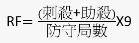
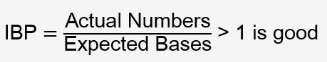
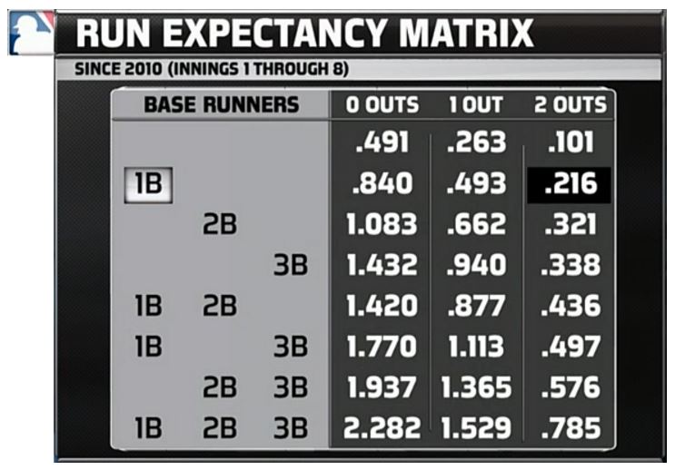

> 中華職棒分析 Range Factor (RF)  意即 : 該守備球員每防守9局，可以製造的出局數。 Extra base-running  意即 : 跑者在面對不同的狀況時，可以多爭取到的進壘數。 Run Expectancy Matrix 得分矩陣  意即 : 進攻方在面對不同的出局數以及壘包狀況時，得分的期望值， 例如，一壘有人二出局下的得分期望值為 0.216，在該局結束時期望能得到 0.216 分。